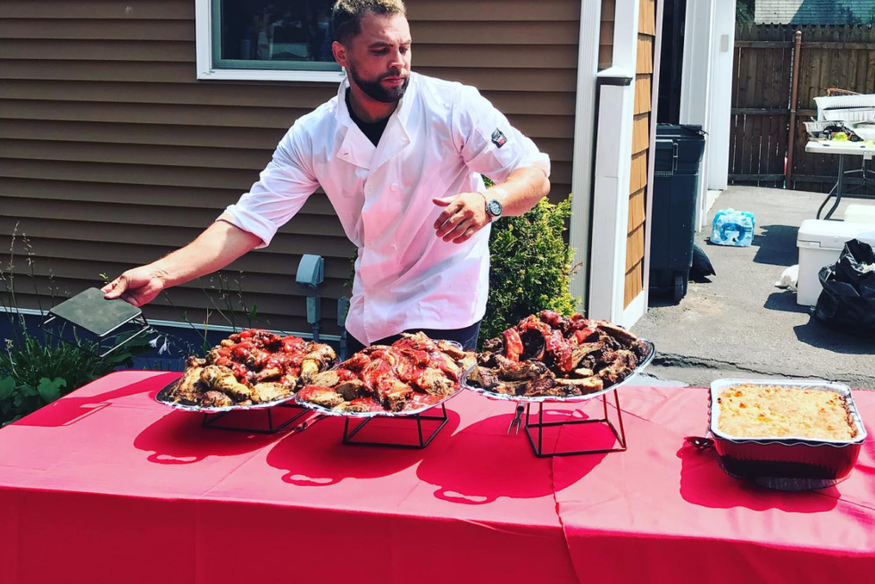
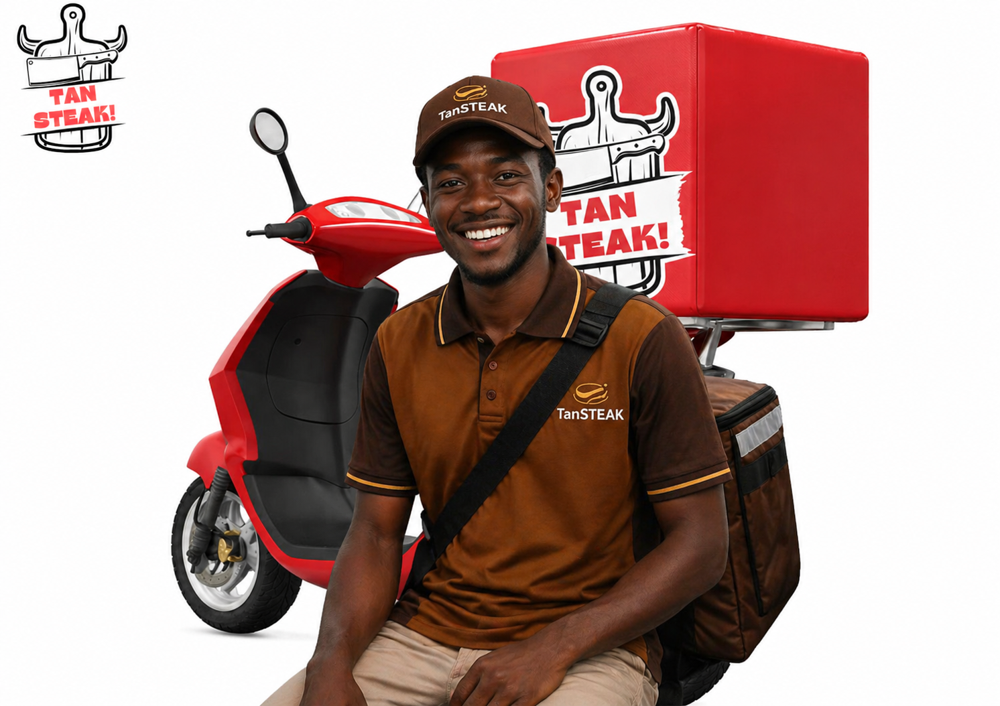

TanSTEAK menghadirkan layanan memasak steak langsung di lokasi acara Anda dengan konsep live cooking yang fresh dan eksklusif. Cocok untuk ulang tahun, gathering kantor, arisan, hingga private party.
Kami menggunakan daging berkualitas dengan bumbu khas TanSTEAK dan tingkat kematangan sesuai permintaan. Selain steak, tersedia pilihan saus dan side dish untuk melengkapi hidangan.
Praktis, premium, dan membuat acara Anda lebih berkesan tanpa perlu repot menyiapkan semuanya sendiri.
Pesan
TanSTEAK menyediakan layanan pengiriman makanan dan minuman langsung ke lokasi Anda tanpa ongkir. Pesanan diantar fresh, aman, dan tepat waktu sehingga Anda bisa menikmati hidangan favorit tanpa perlu keluar rumah.
Cocok untuk makan bersama keluarga, acara kantor, maupun kebutuhan harian. Praktis, hemat, dan tetap dengan kualitas rasa khas TanSTEAK.
Pesan